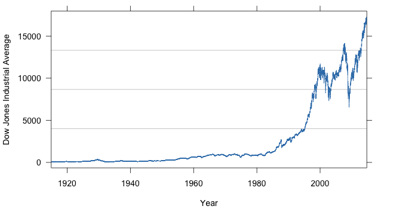

Forecasting Time Series Data

Course Staff
- Instructor
- Prof. Perry (pperry@stern.nyu.edu)
- Office Hours: Thursday, 1:30PM-3:00PM, KMC 8-63 (or by appointment)
- Teaching Fellow
- Bryan Ball (bbb288@nyu.edu)
- Office Hours: Monday, 6:00PM-7:30PM, KMC 8th Floor (near mailboxes)
Lecture Slides
Lecture Videos
Note: to watch these videos, you may need to log on to vpn.stern.nyu.edu
and click “Start” next to “Network Connect.”
Handouts and Links
Assignments